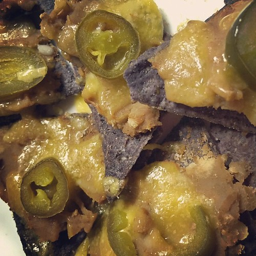

Nachos with Refried Beans

"Sometimes the simplest things are the best. Blue corn chips topped with refried beans and Tillamook sharp cheddar cheese. Don't forget the jalapeños and pink salt. 😊🍴👍 #snack #easy #organic #nachos #texmex" by JenTravelsLife is licensed under CC BY 2.0 
 .
.
Description
Softened crunches, gooey cheese, and scrumptious beans to satisfy your palette. These are perfect for any type of afternoon. The party has started!
Ingredients
- 1 (16 ounce) can refried beans
- 1 teaspoon garlic powder
- 1 teaspoon onion powder
- 1 teaspoon ground cumin
- 1 (10 ounce) bag scoop-shaped tortilla chips
- 8 ounces Colby-Monterey Jack cheese, thinly sliced
- 1 (4 ounce) can sliced jalapeno peppers
Steps
- Preheat the oven to 350 degrees F (175 degrees C).
- Combine refried beans, garlic powder, onion powder, and cumin in a bowl; mix well.
- Pour tortilla chips onto a baking sheet in one layer. Spoon bean mixture over tortilla chips. Top with Colby-Monterey Jack cheese and jalapeños.
- Bake in the preheated oven until cheese is melted, about 5 minutes.